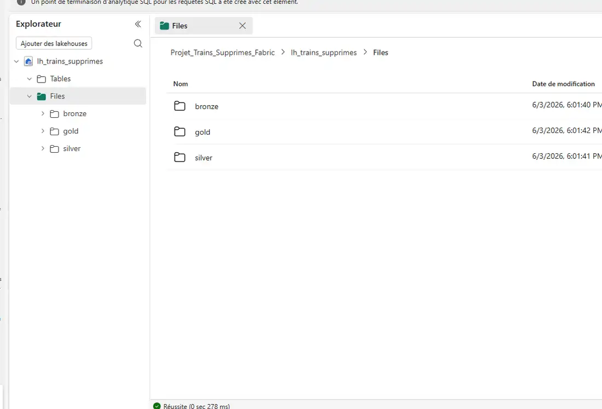
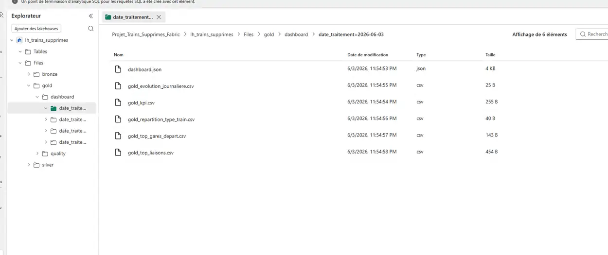

ans d’expérience


Ce portfolio présente des projets aux thématiques distinctes, allant du data engineering au contrôle de gestion, de l’analyse de données à la datavisualisation et au développement web, avec un objectif commun : transformer un sujet précis en solution claire, utile et orientée décision.

Je suis Mandrindra RABEMANANJARA, data engineer avec un parcours en contrôle de gestion. Avec 8 ans d’expérience dans des environnements métiers fortement orientés data, je conçois des analyses, reportings et outils d’aide à la décision au service du pilotage de la performance.
J’interviens sur la chaîne décisionnelle de bout en bout : recueil des besoins, user stories, suivi agile, structuration des données, construction de pipelines, automatisation, contrôle qualité et mise en production, avec les langages Python et SQL, des plateformes cloud-data comme Microsoft Fabric, AWS et GCP, ainsi que des outils d’orchestration et d’automatisation comme n8n et GitHub Actions.
Côté contrôle de gestion, j’interviens sur les cycles budgétaires, clôtures, forecasts, pilotage social, analyse de performance et datavisualisation, en exploitant des données issues d’ERP et de SIRH, puis en les transformant en reportings et tableaux de bord avec Excel avancé / VBA, Power BI, Qlik, Looker et MyReport, dans une approche orientée fiabilité, lisibilité et aide à la décision.


ans d’expérience
ans d’expérience
ans d’expérience


Participation active aux travaux de restructuration menés à la suite de la fusion entre Modis et Akka Technologies, ayant conduit à la création d’AKKODIS. Contribution à la réorganisation des équipes, à l’amélioration des synergies internes et à la mise en place d’une organisation financière et opérationnelle plus cohérente, alignée sur les enjeux du nouveau groupe.

Implication dans l’intégration d’un logiciel de facturation et d’un ERP, en tant que relais métier côté contrôle de gestion. Participation au recueil des besoins, aux phases de tests, à la recette et aux ajustements fonctionnels, avec en parallèle une refonte du plan analytique pour fiabiliser le pilotage financier.

Mise en place et structuration d’un service de contrôle de gestion dédié, construit pour accompagner la croissance et renforcer le pilotage de la performance. Cette organisation, aujourd’hui composée de trois personnes.

Modernisation des outils financiers à travers le déploiement de solutions automatisées, permettant de réduire sensiblement les délais de production des reportings. Cette évolution a également renforcé le suivi des indicateurs clés, offrant à la direction une lecture plus fluide, plus fiable et plus réactive de la performance.

Contribution au redressement d’une situation financière déficitaire, avec un retour à un résultat net positif. Mise en place d’un suivi structuré de la trésorerie, ayant permis de sortir durablement des découverts bancaires et de stabiliser la situation financière.

Déploiement des forecasts trimestriels et structuration d’un pilotage financier synthétique à destination du Conseil d’administration. Cette démarche a permis d’apporter une vision claire, partagée et orientée décision des objectifs financiers et stratégiques du groupe.


Transformer une donnée publique brute en indicateurs exploitables, contrôlés et consultables dans un dashboard web.
Les données de mobilité existent souvent sous forme de fichiers publics, accessibles mais peu exploitables directement. Ce projet part d’un cas concret : la liste des trains supprimés publiée sur data.gouv.fr. L’objectif n’est pas seulement d’afficher des chiffres, mais de construire une chaîne data capable de transformer ces fichiers en information lisible, contrôlée et réutilisable.
La solution repose sur un pipeline automatisé : récupération des données sources, contrôle du schéma, nettoyage, standardisation, dédoublonnage, puis construction d’un modèle analytique. L’architecture suit une logique Bronze / Silver / Gold afin de séparer la donnée brute, la donnée contrôlée et la donnée prête à l’analyse.
Microsoft Fabric joue le rôle de socle technique pour organiser les zones Lakehouse, tandis que GitHub Actions et GitHub Pages assurent la mise à jour et la publication du dashboard public.



Le dashboard permet de suivre les suppressions sur une période donnée, de filtrer par gare ou par type de train, et d’identifier les gares ou liaisons les plus concernées. Les graphiques restituent les volumes, l’évolution quotidienne, la répartition par type de train et les tranches horaires.

Ce projet analyse les mobilités du Rhône et de la Métropole de Lyon à partir de sources publiques. L’objectif n’est pas de présenter une simple visualisation, mais de montrer une démarche complète : préparation des données avec Python, structuration d’un modèle analytique et restitution dans un rapport Power BI lisible.
La lecture finale permet d’aborder le territoire sous trois angles : volume global, temporalités de déplacement et concentration géographique. Le détail technique reste volontairement consultable dans le dépôt GitHub afin de rendre le projet auditable.
La valeur du projet tient dans l’articulation entre Python, Power BI et la restitution métier. Chaque étape a un rôle distinct : préparer correctement la donnée, construire un modèle cohérent, puis produire une lecture claire du territoire.
Collecte de sources ouvertes, profiling, contrôle des volumes, doublons, valeurs vides, formats et enrichissements temporels ou géographiques.
Construction d’un modèle analytique en constellation : faits, dimensions, clés techniques et relations cohérentes pour des filtres stables.
Restitution en trois pages : vue d’ensemble, analyse temporelle et analyse géographique pour guider la lecture du territoire.
Le workflow présente la logique générale du projet : partir de données publiques dispersées, les contrôler et les transformer avec Python, puis les mettre en forme dans un modèle Power BI adapté à l’analyse territoriale.

Les données préparées sont organisées dans une logique de datawarehouse. Les tables de faits conservent le détail des trajets, comptages, météo, chantiers et stations, tandis que les dimensions structurent les dates, communes, tranches horaires, secteurs et tarifs.
Cette organisation évite une table unique trop lourde et permet d’alimenter Power BI avec des relations lisibles, des filtres cohérents et des indicateurs fiables.

La restitution Power BI regroupe les trois pages du rapport : vue d’ensemble, analyse temporelle et analyse géographique. L’intégration ci-dessous permet de naviguer directement entre les pages du rapport, avec les filtres et interactions du tableau de bord.
Rapport Power BI interactif : vue d’ensemble, analyse temporelle et analyse géographique.
L’analyse fait ressortir une mobilité concentrée autour de quelques pôles récurrents. Sur janvier-mars 2026, le modèle exploite 74 795 trajets ; mars ressort comme le mois le plus fort après un léger recul en février.
Les flux les plus visibles concernent notamment Villeurbanne, Bron, Saint-Priest, Écully et Bourgoin-Jallieu. La lecture temporelle confirme deux créneaux dominants : 08h-12h et 16h-20h, principalement sur les jours ouvrés.
Le rapport permet donc de passer de sources ouvertes dispersées à une lecture fonctionnelle du territoire : repérer les zones les plus actives, comprendre les moments de tension et identifier les liaisons qui méritent une analyse plus fine.
Ce projet correspond au développement du site portfolio personnel publié avec GitHub Pages. L’objectif n’est pas seulement de créer une page vitrine, mais de concevoir un support professionnel capable de structurer une identité, valoriser des projets et rendre un parcours lisible à travers une navigation claire et une expérience responsive.
Le projet repose sur une logique de sobriété technique : construire un site statique, rapide et évolutif, tout en conservant une présentation claire des contenus et des réalisations.
Le site doit être lisible pour un recruteur, tout en montrant une vraie capacité technique : structurer une interface web, organiser des contenus projet, gérer des interactions, intégrer des ressources externes et publier un rendu propre sans framework lourd.

Le résultat est un portfolio web rapide, lisible, responsive et maintenable, capable de présenter un profil professionnel, des projets détaillés et des ressources externes dans une interface cohérente. Le site peut évoluer progressivement avec de nouvelles cartes projets sans remettre en cause l’architecture existante.